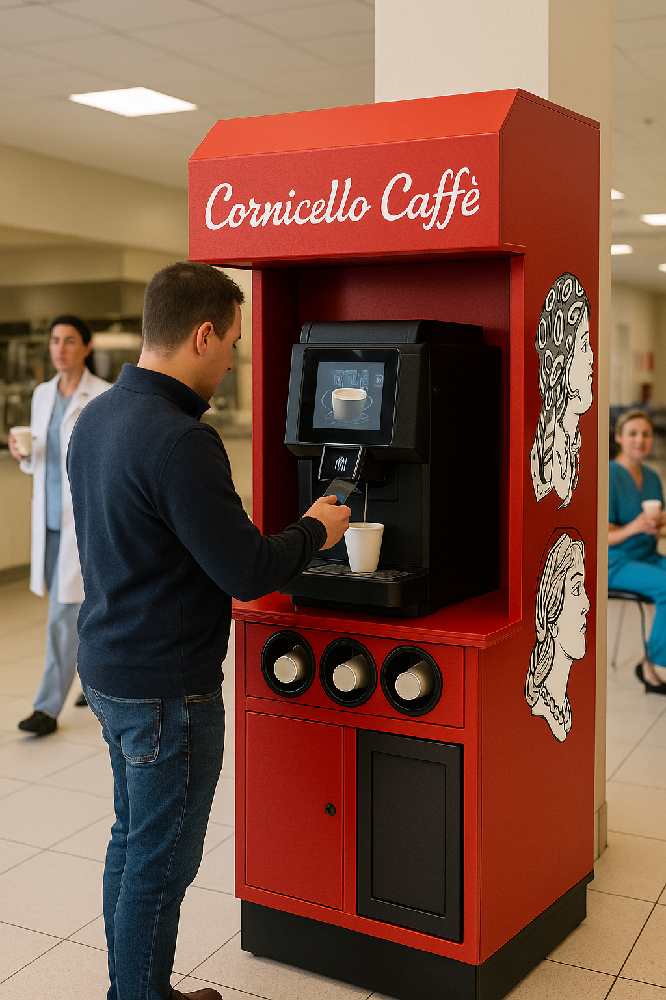

Services
Public spaces
Self-service caffès
Bring the charm of an Italian caffè to high-traffic spaces with a compact, tap-to-pay station that serves barista-quality drinks in seconds while using a compact, demand-based service model.

Service options
A premium coffee amenity without adding staff.
Tap-to-pay kiosk
A compact, guest-facing station that lets visitors order and pay quickly.
- Quick drink selection
- Self-serve payment flow
- Minimal operational effort
- Demand-based drink service
Venue coffee station
Ideal for public spaces that want to elevate the visitor experience without sacrificing valuable space.
- Professional branded presence
- Premium caffè menu
- Placement matched to traffic
- Compact footprint
Multi-site rollout
A consistent coffee program for operators managing multiple buildings or public locations.
- Consistent guest experience
- Usage-informed recommendations
- Scalable service support
- Usage-informed restocking
Pricing model
Simple for the venue, simple for the customer.
No upfront host cost
The station is designed to add value without requiring a large installation investment or excess operational footprint.
Tap to pay
Customers pay per drink, making the experience easy to understand and easy to operate.
Usage milestones
Monthly earnings potential can be tied to usage milestones as traffic builds, helping supply match real demand.
Product format
Compact, branded, and built for everyday traffic.
The self-service caffè format is designed to feel premium without feeling complicated. Guests get a quick pick-me-up, and the location gets a polished amenity that can grow with demand while avoiding unnecessary overstock.